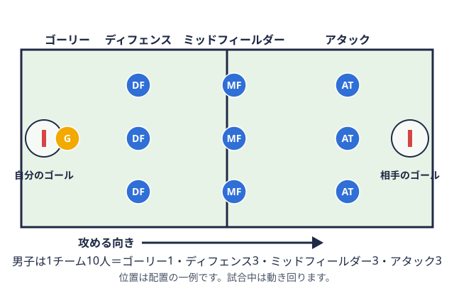
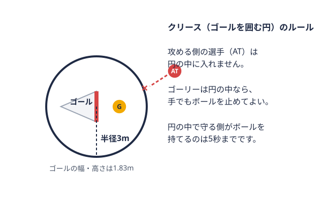
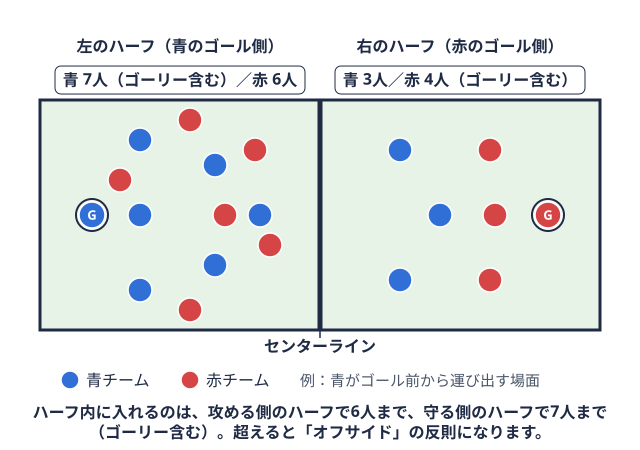
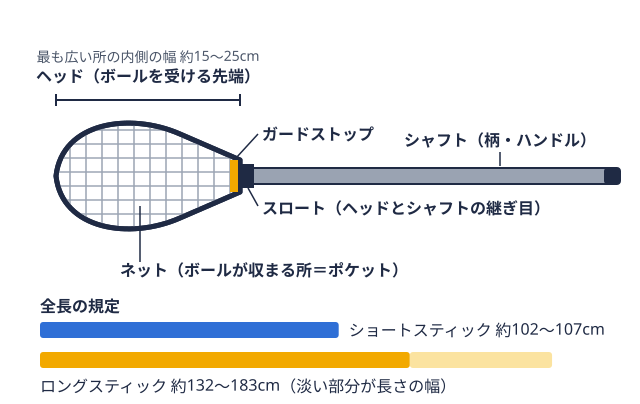
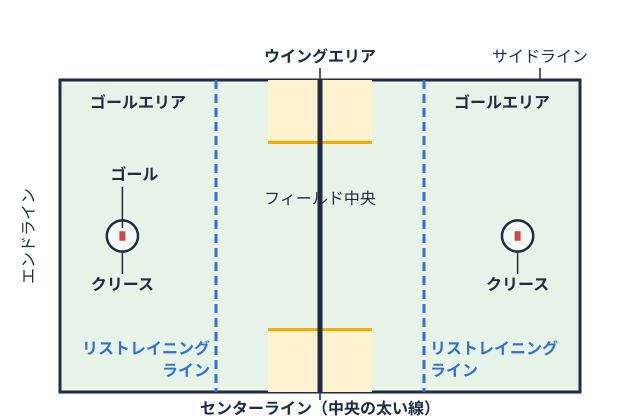

ポジション 2026-09-22
ラクロス アタックの役割と練習法｜自主練4つ・チーム練習4つの基礎メニュー
はじめての方向け
この記事の内容
この記事の結論アタックは「点を取る人」であると同時に「攻撃を組み立てる人」自主練でできる基礎練習法新歓や新シーズンのポジション決めで「アタック主に相手ゴールの近くで、シュートや得点の組み立てを担う選手。男子は3人。 
この記事の結論
アタックは、相手ゴール付近で得点を狙いつつ、攻撃を組み立てる役割も担うポジションです。最初に取り組むなら、次の3つが土台になります。
- 壁当て壁に向かってボールを投げ、跳ね返りを受ける、一人でできる基礎練習。用語辞典で見るでシュートフォームを固める
- 利き手でない側のキャッチ・シュートに慣れる
- 1対1（ダッジ攻める側の選手が、1対1で守る相手をかわして前へ出るプレー。シュートやパスの機会を作る。用語辞典で見る）で守る相手との間合いを学ぶ
男子ラクロスは1チーム10人で、ゴールを守る「ゴーリーゴールを守る専任の選手。ゴールを囲む円（クリース）の中では、手でもボールを止められる。 
アタックは「点を取る人」であると同時に「攻撃を組み立てる人」
アタック（AT）の第一の仕事は、相手ゴールに向けてシュートを決め、得点を積み重ねることです。ただし役割はシュートだけではありません。相手ディフェンスの守り方を見ながら、自分で守る相手（ディフェンス）を抜くのか、味方に得点につながるパス（アシスト）を出すのか、チームの攻撃パターンに乗るのかを、その場で判断する組み立て役の側面もあります。
攻め方は個人の特性やチームの戦術によって幅があり、「身体能力を活かしてDFを切り崩す」「精度の高いシュートで決め切る」「状況判断でDFを翻弄する」など、選手ごとに異なるスタイルが成立しやすいポジションです。
シュートを打つ場面までボールをつなぐ過程では、本サイトのクリアの基本設計で扱っている、守りで奪ったボールを自陣から運び出して攻撃へ移るプレー（クリア守る側がボールを確保し、自陣から運び出して攻撃につなげるプレー。 
自主練でできる基礎練習法
グラウンドが確保しにくい大学部活では、個人でできる自主練の比重が高くなります。アタックの自主練は、次の4つに整理できます。
| 練習名 | 鍛えるもの | 必要な道具 | 目安の進め方 |
|---|---|---|---|
| 壁当てでのシュートフォーム固め | シュートフォームの安定 | スティックボールを運ぶ・パスする・シュートするために使う、先に網が付いた棒状の道具。ボールは手で直接持てない。  用語辞典で見る・ボール・壁 | 近い距離から始め、慣れたら距離やフォームを変える |
| 非利き手でのキャッチ・シュート | 利き手に頼らないプレーの幅 | スティック・ボール・壁 | キャッチだけ、次にキャッチからシュートへと段階を踏む |
| コーンを使ったフットワークドリル | 動き出しの速さ・切り返し | コーン・マーカー | コーンを守る相手に見立て、間合いを詰める・外す動きを繰り返す |
| ジャグリング・スティックワーク | クロス操作の安定感 | スティック・ボール | 片手でのクレードルクロスを小刻みに揺らし、ボールを網のくぼみに保ったまま相手から守る動き。用語辞典で見るから始め、ボール数や動きを増やす |
進め方は人によって合う強度が違うため、1回の量や頻度はチームの指導者に相談して決めてください。
壁当てでのシュートフォーム固め
- 狙い: 試合中に咄嗟にシュートを打つ場面でも、フォームが崩れにくくする。
- やり方: 壁から一定の距離を取り、クイックスティック（キャッチしてすぐ打つ打ち方）やオーバーハンド（頭の上から振り下ろす打ち方）を繰り返します。投げ方の基本はラクロスのスロー（投げ方）の基本、受け方はラクロスのキャッチの基本で整理しています。
- よくある失敗: 速く打とうとして、ボールを受ける姿勢やスティックの位置が毎回ばらつく。
非利き手でのキャッチ・シュート
- 狙い: DFに利き手側を切られた状況でも、プレーを成立させる。
- やり方: 非利き手でキャッチからシュートまでを完結させます。
- よくある失敗: 難しいため利き手に戻してしまい、練習量が偏る。
コーンを使ったフットワークドリル
- 狙い: 1対1で守る相手を抜く際の、最初の一歩の速さや切り返しの感覚を養う。
- やり方: コーンを相手役に見立て、間合いを詰める・外す動きを反復します。
- よくある失敗: 動きがいつも同じ形になり、実戦で相手に対応されやすくなる。
ジャグリング・スティックワーク
- 狙い: クロス操作の安定感と、ハンド・アイ・コーディネーション（手と目の連動）を高める。
- やり方: 複数のボールを使ったジャグリングや、片手でのクレードル（クロスを揺らしてボールを保持する動き）を行います。本サイトのシーズン逆算の練習計画でも、壁当てなどの個人スキル練習をグラウンド外の時間で積み上げる方法として位置づけています。
- よくある失敗: 力んで握り込み、ボールが収まりにくくなる。
シュートの基本ポイント
シュートの技術解説では、次のような点が共通して挙げられます。
- トップハンド（上の手）で方向を決め、下の手は支えにする
- 腰をひねり、肩と手首で振る
- ゴーリーが寄ってきたときは、フェイクを入れてから打つ
どれもフォーム固めの壁当てで意識できます。ゴーリーを見て打ち分ける感覚は、チーム練習のシュートセッションで確かめるとよいでしょう。
ボールを持っていない時の動き
アタックはボールを持っている時間より、持っていない時間のほうが長くなる場合があります。次のような動きを意識すると、パスを受ける機会を作りやすくなります。
- 早めに首を振って、周囲の状況を見る
- 空いたスペースへカットして、パスの受け手になる
- ゴール裏（X）から攻撃を組み立てる動きに関わる
ルール上、攻める側のハーフ（センターラインコートの中央を横切る太い線。試合再開のボール争いを行う場所で、人数制限（オフサイド）の境目にもなる。 
これらはいずれも道具と壁さえあれば取り組める内容が中心のため、グラウンド時間が限られているチームでも積み重ねやすい練習です。
チーム練習で鍛えたいこと
自主練が個人スキルの土台だとすれば、チーム練習ではアタックならではの「連携」を鍛える機会になります。
- 1対1（ダッジ：守る相手を抜くプレー）の反復: DFを1人つけた状態で、ゴール前までボールを運び切る練習です。DFの寄せ方を変えながら反復し、試合で使える引き出しを増やします
- 2対1・3対2でのアシスト判断: 数的優位の局面で、自分でシュートを打つべきか味方にパスを出すべきかを判断する練習です。味方の位置取りとタイミングを合わせる連携が求められます
- ファストブレイク（速攻）でのポジショニング: クリアからそのまま攻撃につなげる速攻の場面では、ゴールに近い位置にいるアタック同士が横に開いた「L字」の形を作り、パスを受けられる体勢を保つことが基本とされています。初級では4対3のような少人数ドリルから始め、慣れてきたらフルコートでの速攻練習に発展させる進め方が紹介されています
- 実戦形式でのシュートセッション: 守備をつけた状態から、実際にシュートまで打ち切る練習です。自主練で身につけたフォームや間合いの感覚を、試合に近いスピードで再現できるかを確認します
1対1（ダッジ）の段階
1対1は、次のような段階に分けて練習すると整理しやすくなります。
| 段階 | 内容 |
|---|---|
| 1 | 守る相手との間合いを詰める |
| 2 | 利き手側へ仕掛ける |
| 3 | スティックを持ち替えて逆側へ仕掛ける |
| 4 | 抜いた後にシュートかパスかを判断する |
ラクロスの1対1でオフェンスがDFをかわす有効手段を扱った研究として、立命館大学の修士論文があります。得点機会につながる局面として1対1を分析した内容で、練習の優先度を考える手がかりになります（論文PDF）。
仕掛ける側だけでなく、守る側の考え方を知ると間合いの取り方が見えやすくなります。ディフェンスの役割と練習法もあわせて読んでみてください。
用具の面でも準備しておきたいこと
アタックは細かいスティックワークとシュート精度の両方が求められるポジションのため、自分の手に合ったクロスを選ぶことも練習効果に影響します。ヘッドクロスの先端にある、ボールを受ける枠の部分。内側に網が張られている。用語辞典で見る・シャフトクロスの柄（持ち手）にあたる長い棒の部分。先端のヘッド（枠）につながっている。用語辞典で見る・ポケットヘッドの網の中で、ボールが収まるくぼみの部分。深すぎてはいけないという規定がある。用語辞典で見るの組み合わせによって扱いやすさが変わるため、購入前にポジションごとの傾向を確認しておくと選びやすくなります。詳しくはラクロススティックの値段とポジション別の選び方で整理しているので、あわせて参考にしてください。
未経験からアタックを任された部員へ
アタックはシュートの成否が結果として最も見えやすく、決められなかった場面が目立ちやすいポジションです。そのためプレッシャーを感じる人もいますが、得点という分かりやすい形でチームに貢献できるポジションでもあります。
大学から競技を始めた部員がアタックを任されるケースは珍しくありません。最初はシュートが枠を外れたり、DFとの間合いの詰め方が分からなかったりしても不思議ではありません。上達のペースには個人差があるため、周囲と比べて焦る必要はなく、フォーム・フットワーク・アシストの判断という基礎を一つずつ積み重ねていくことが土台になります。攻撃陣と動きをつなぐ中盤の選手の役割が気になる場合は、ミッドフィルダーの役割と練習法もあわせて読んでみてください。
よくある質問
未経験でもアタックはできますか？
大学から競技を始めた部員がアタックを任されるケースはあります。まずは壁当てでのフォーム固めなど、基礎から始めるのが一般的です。具体的な進め方は、チームの指導者と相談してください。
アタックとミッドフィールダーの違いは何ですか？
JLA公認男子競技用ルールでは、アタックは相手ゴール側で攻める3人、ミッドフィールダーは攻めと守りをつなぐ3人と区分されています。ミッドフィールダーの詳細はミッドフィルダーの役割と練習法で解説しています。
自主練は1日どれくらいやればいいですか？
適切な量は体力や経験、チームの練習量によって異なるため、一概には言えません。無理のない範囲で、指導者と相談して決めてください。
女子ラクロスにもアタックはありますか？
女子のルールは男子と人数や区分が異なります。ポジションの詳細は10人制女子競技｜公認競技ルール | JLAで確認してください。
まとめ
アタックは「シュートを決める」役割にとどまらず、DFの状況を見ながら攻撃を組み立てる判断力も求められるポジションです。壁当てでのフォーム固めや非利き手練習、フットワークドリルといった自主練を積み重ねたうえで、チーム練習では1対1の反復やファストブレイクでのポジショニングを鍛えていくとよいでしょう。用具選びも、自主練の質に影響する場合があります。
自分のチームが今シーズンどのリーグ・ブロックで戦っているかは、本サイトの順位表から確認できます。他大学のアタックがどんなチームで得点を重ねているか気になる場合は、全国8地区のチーム一覧もあわせて参考にしてください。
出典
- 10人制男子競技｜公認競技ルール | JLA
- 10人制女子競技｜公認競技ルール | JLA
- 全国地区公式戦 学生リーグ：2026年 | JLA
- ラクロスの1on1局面でオフェンスがDFを躱す有効手段（立命館大学 修士論文）
本記事は公開されている競技情報・練習法の紹介記事をもとに編集部が一般的な内容として構成しています。練習メニューの効果や適切な強度には個人差があるため、実施にあたってはチームの指導者と相談しながら取り入れてください。
このチーム・この競技を応援したい方へ
ツナカレでは大学の部活・団体への協賛先を探せます。
取材してほしい部活を募集中
頑張っている部活・団体を、ツナカレ運営メディアが取材でご紹介します。
オフシーズン・引退後に、長期インターンという選択
部活で培った力を実務で試す。16タイプ診断（30秒）で合う企業がわかります。